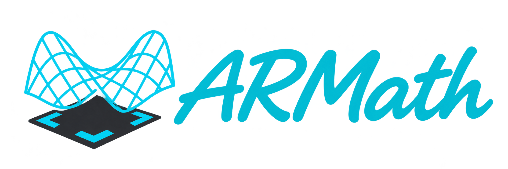

Ative a câmera e mostre um marcador ArUco.
Permita o acesso à câmera para ver os nomes dos dispositivos.

O ARMath usa realidade aumentada para explorar superfícies matemáticas em 3D. Aponte a câmera para um marcador para ver a superfície sobre o vídeo e sua equação logo abaixo. Use os deslizadores para ajustar a escala e girar a figura nos eixos X, Y e Z.
Criado por Izaias Neriizaiasneri@gmail.com